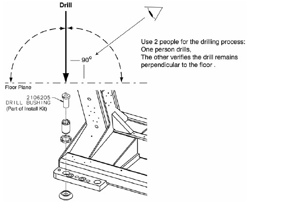
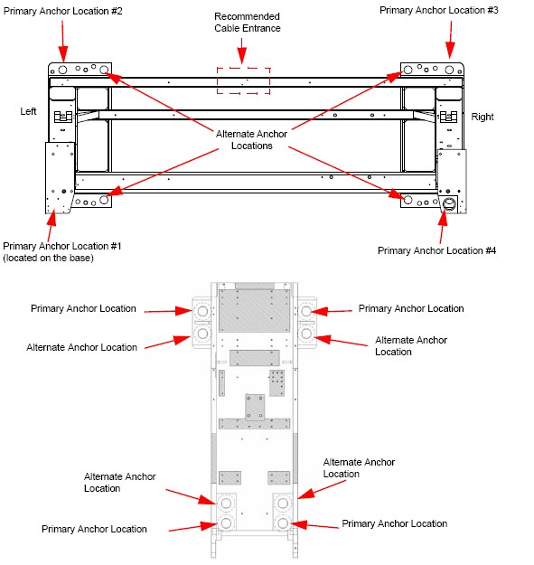
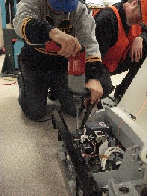

Operating Documentation
Direction 5193574-800, Rev# 22
LightSpeed 7.X Service Methods
Module Version 2.0, Version Date 6/29/11
Operating Documentation |
| Labor: | 2 people; 1 man-hour |
| Tools: | PPE |
| Hammer Drill | |
| ½ in. x 12 in. Drill Bit (Metric equivalent must not be used) | |
| ½ in. Drill Bushing (shipped in install support kit) | |
| Vacuum with HEPA or drywall dust filter | |
| Vacuum Hole Attachment - to clean debris from the holes |
1. Use a piece of tape to mark the drill bit depth of 190 mm (7-1/2 in.) from the tip of the 1/2 in. masonry drill bit. |  |
2. Place the drill bushing inside each adjuster, to keep the hole vertical and centered within the adjuster. | |
3. Drill all eight anchor holes perpendicular to the floor until the mark on the drill bit is even with the top of the drill bushing. |  |
4. While one person drills, a second person should vacuum the cement dust. Pause several times to clear debris from the hole and surrounding area. |  |
5. Check the depth of all holes by inserting an anchor backward into the hole. There should be 20 mm (1/2 in.) or less showing. |